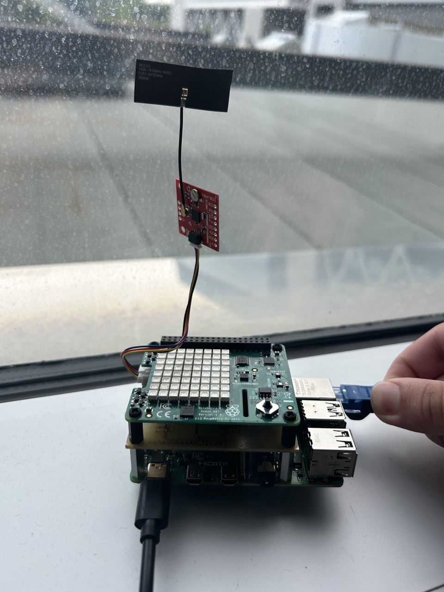
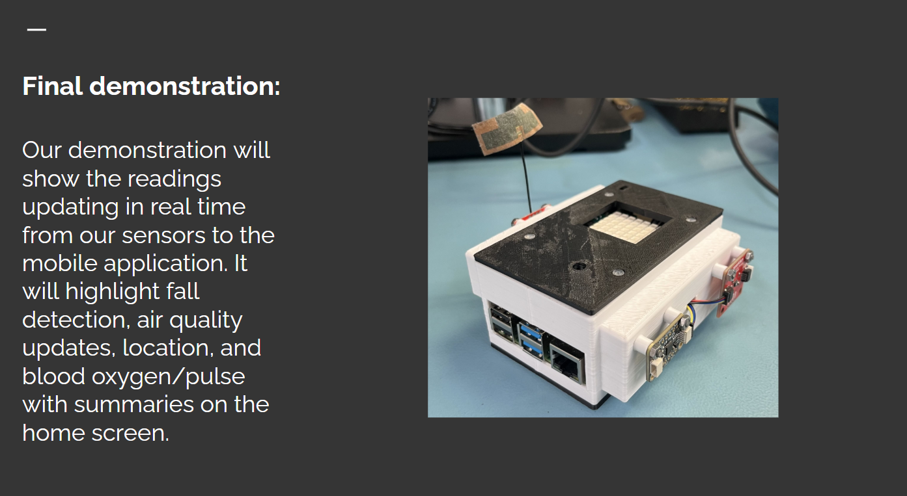
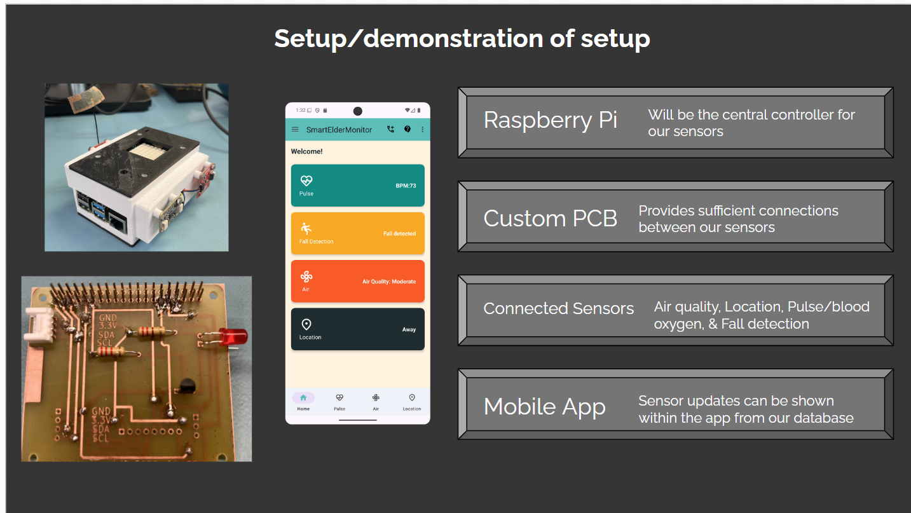
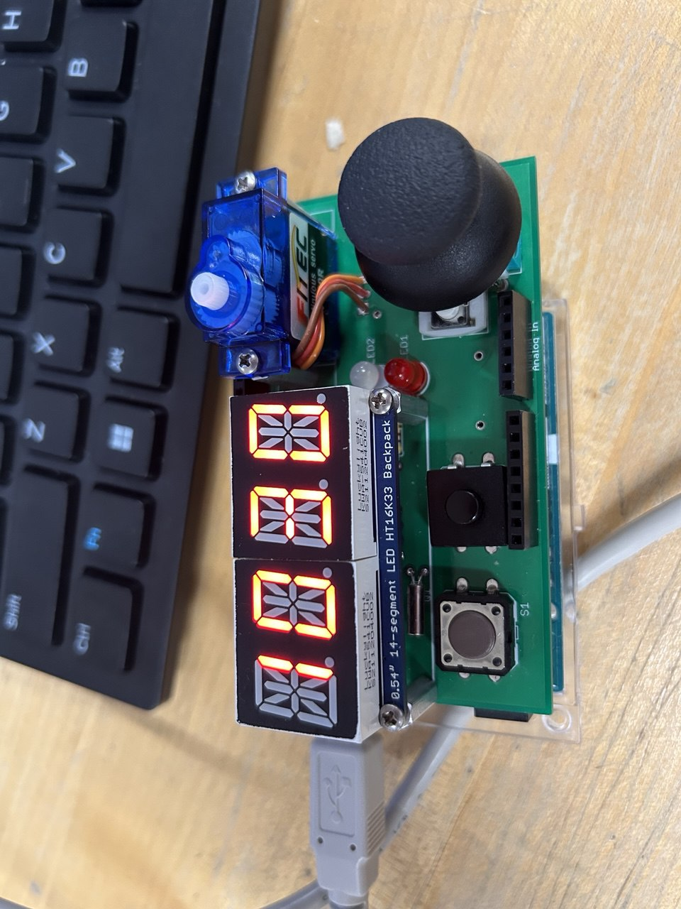

Moe Fouladi
Computer Engineering grad from Humber. Two IT co-ops in sysadmin and technical support. Actively looking for full-time IT, network, or dev roles in Toronto. Dean's Honor List, 3 consecutive semesters.
I build things across the stack: enterprise Windows/Linux infrastructure, embedded systems, IoT, and Android apps. I like solving real problems and learning fast.
Professional Experience
System Administrator (Co-op) | Multimatic, Markham ON | Sept 2024 - Apr 2025
- Troubleshot Windows Server issues, Microsoft app bugs, and software problems for 200+ users daily.
- Handled Windows updates, server maintenance, and general infrastructure fixes.
- Set up and maintained VMware vSphere VMs: provisioning, configuring, keeping things running.
- Managed Active Directory: user accounts, group policies, and permissions across Windows and Linux.
- Handled networking tasks including VPN config, firewall rules, and basic network troubleshooting.
- Tracked and resolved incidents through Jira; handled access issues, hardware problems, and escalations.
- Set up and maintained CrowdStrike endpoint protection across the environment.
- Kept asset inventory up to date with Lansweeper and handled tape backup rotations.
IT Technician (Co-op) | Kinectrics, Toronto ON | Jan 2024 - May 2024
- Troubleshot hardware and software issues for staff across the organization.
- Deployed VMs, configured VPNs, and imaged systems for secure deployment.
- Helped with Active Directory: provisioning users, managing groups and permissions.
- Handled up to 40 daily support tickets during peak periods.
Selected Projects
Smart Elder Monitor (IoT System)



Group project | Humber College
Built an IoT monitoring system using Raspberry Pi with temperature, GPS, motion, and SOS sensors. Wired up an MQTT-to-Firebase pipeline for real-time data and alerts.
My contributions: Hardware integration, MQTT/Firebase backend, Android app for caregiver alerts, and full IoT deployment.
Tech: Python, Raspberry Pi, MQTT, Firebase Firestore, Android
View on GitHub
FreeRTOS Task Management (RP2040)
Built concurrent real-time tasks on the RP2040 using FreeRTOS. Used queues, semaphores, and mailboxes for task communication; added OLED display animations.
Tech: C, C++, FreeRTOS, RP2040
Microwave Controller Simulation
Simulated a microwave controller in low-level assembly and embedded C.

Skills
Systems Administration
- Windows Server, Active Directory, Group Policy, CrowdStrike, Lansweeper, Jira
- VMware vSphere, Hyper-V, Azure
Networking
- TCP/IP, VPNs, Firewalls, Cisco IOS, VLANs, DHCP, DNS
- Linux/Unix administration, Bash scripting
Embedded Systems and IoT
- C, C++, FreeRTOS, RP2040, Raspberry Pi, Arduino, MQTT, Sensors
Software Development
- Python, Java, Android Studio, Firebase, Git, GitHub
Relevant Coursework
- Computer Systems Administration, Network Administration, Network Security, Windows Scripting, UNIX Internals, Network Programming, Smart Embedded Systems, Real-Time Systems, Micro Assembly Language
Education
Computer Engineering Technology, Advanced Diploma (Co-op Stream)
Humber College, Etobicoke ON | Graduated January 2026
Dean's Honor List, 3 consecutive semesters
Contact
GitHub: github.com/MoeFouladi
LinkedIn: linkedin.com/in/moefouladi
Email: mh.fouladi@hotmail.com